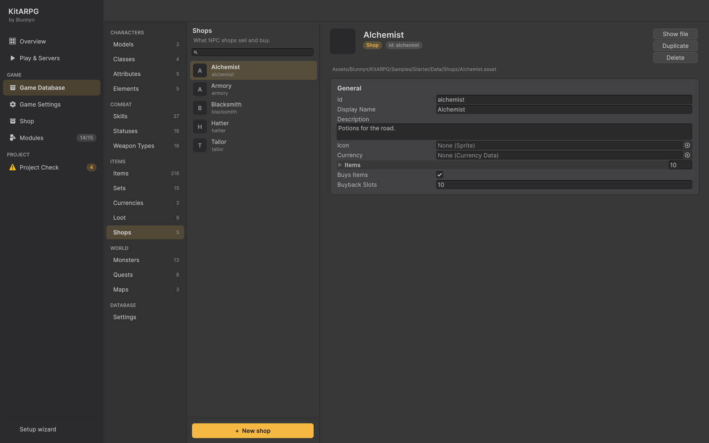

NPC shops
An NPC shop is a ShopData asset that lists what an NPC sells, at what price and in what currency, with optional limited stock that refills over time. This page covers every field of a shop, buying, selling and buying back, how stock works, and a step by step NPC with a shop.
What a shop is
A shop has two parts:
- The shop data (
ShopData, Game Database > Items > Shops): its currency, its entries and whether it buys from players. - A Shop option on an NPC that opens it. Several NPCs can share one shop data, each with its own stock.
The sample has eight shops: the Alchemist (Mira), Armory (Brann), Hatter (Pip), Tailor (Doran), Cobbler (Wren), Arcanist (Selis), Blacksmith (Garrick) and the Guild Registrar (Edda, guild charters).
Shops sell for gold or another in-game currency. The in-game shop that sells for premium currency is a different system: see Cash shop.
Where it is in the editor

Game Database > Items > Shops. + New shop makes one in a Shops folder next to the database and adds it to the database's shops list. You can also use Create > KitARPG > Shop. The entries show as rows with each item's icon.
Fields
The shop
| Field | What it does | Default |
|---|---|---|
| Id, Display Name, Description, Icon | Common to every database asset. | From the file name |
Currency (currency) |
What it charges in. Empty is gold. A premium currency is an error in Project Check: premium currency is only spent at the in-game shop. | Empty (gold) |
Items (items) |
What it sells, in the order the window lists them. | Empty |
Buys Items (buysItems) |
Players can sell their items here, for gold. Only when Game Settings lets players sell to NPCs at all. | On |
Buyback Slots (buybackSlots) |
Last items each player sold, which they can buy back for what they got until they leave the shop. 0 turns it off. | 10 |
Each entry
| Field | What it does | Default |
|---|---|---|
Item (item) |
What it sells. Project Check warns about an entry with no item. | None |
Price (price) |
Price of one, in the shop's currency. 0 uses the item's buy price. | 0 |
Stock (stock) |
How many it has. 0 never runs out. | 0 |
Restock Minutes (restockMinutes) |
Minutes to get one back once some are sold. 0 only refills when the map restarts. | 5 |
The item's buy price is its Buy Price (buyPrice), or four times its Sell Price (sellPrice) when Buy Price is 0. See Items.
In Game Settings
| Field | What it does | Default |
|---|---|---|
Players Sell To Npcs (playersSellToNpcs, Game Settings > Economy) |
Shops buy what players bring. Off, nothing is sold to NPCs: items go between players, to the market or to the forge, and loot never turns into gold. A shop can still refuse on its own with Buys Items off. | Off |
A shop buys only when both its Buys Items and the game's Players Sell To Npcs are on. With the default settings, no shop buys.
Buying
The shop window lists each entry with its icon, name, price and the stock left for limited entries, and a Buy button.
- Buy or right click on an entry buys one.
- With
Shift, it buys a stack: up to the item's maximum stack, or what is left in stock. - The server checks the entry exists, there is stock, the player can pay the price times the amount in the shop's currency, and the bag has room.
- Errors show in the window: "You can't afford that.", "Sold out. Come back later.", "You're too far away.", or the bag's own reason.
Every purchase is written to the game log (ShopBuy) with the shop, item, amount and price.
Selling
When the shop buys, opening it also opens the bag beside it, and the bag sells while the shop is open:
- Right click a bag item to sell it, or drag it onto the shop. The bag's hint line shows the other ways (double click,
Shiftfor one,Ctrlfor all). - A stack asks how many.
- The player gets the item's Sell Price times the amount, always in gold, whatever the shop's currency.
- Items with a Sell Price of 0, and quest items, can't be sold: "Nobody would buy that."
- With the shop not buying: "This shop doesn't buy items."
Every sale is written to the game log (ShopSell).
Buying back
Each sale goes to the top of the player's buyback row, up to Buyback Slots items. Right click one to get it back for the gold the player received. The item comes back exactly as it was sold, with its rolled bonuses and upgrades. The row starts empty every time the shop is opened.
Stock
- Stock is kept per NPC while the map runs. Two NPCs with the same shop data have separate stock.
- A limited entry starts full (Stock). Once one is sold, a clock starts: every Restock Minutes, one comes back, until the entry is full again.
- With Restock Minutes 0, sold items only come back when the map server restarts.
- Everyone on the map shares the stock of an NPC. In MMO, each map server, and each copy of an instanced map, has its own.
The sample's Armory sells its better weapons with stock 1 to 3, refilled every 5 to 10 minutes: "The good pieces sell out."
Place an NPC with a shop
This makes a herbalist who sells potions and a rare elixir.
-
Make the shop. Game Database > Items > Shops > + New shop. Rename it Herbalist.
-
Leave Currency empty (gold).
-
Add entries to Items:
Item Price Stock Restock Minutes Health Potion 20 0 5 Mana Potion 20 0 5 Antidote 0 (uses its buy price) 0 5 Fortitude Elixir 45 3 10 -
Leave Buys Items on if your game lets players sell to NPCs.
-
Place the NPC. Open the map scene. Add the character model and name the object
Herbalist. -
Add Component > Npc. Npc Id
herbalist, Display NameHanna, Greeting "Herbs for every ache." -
Add Component > Capsule Collider and fit it to the body.
-
In the
Npcinspector, press Shop under Add option. In the new option, pick Herbalist in Shop. Leave Label empty for "Trade", or type "Browse herbs". -
Save the scene and press Play. Click Hanna, then Trade.
With a single option and an empty Greeting, clicking the NPC opens the shop directly.
A shop that opens later
Give the Shop option Conditions, for example a QuestCondition on "Help Hanna" set to Done, and turn on Show When Locked so players see "Trade (Finish Help Hanna first)" greyed out until then. See Conditions and actions.
A shop inside a conversation
A Shop option can sit inside a dialogue line's Options, so the shop opens after some talk.
A shop in another currency
Set Currency to a currency of your game, for example tokens from a quest. The price is in that currency; selling still pays gold. See Currencies.
Single player and MMO
The rules are the same. In MMO the map server checks every purchase and sale; the client only asks. Stock lives on the map server, so it starts over when that map server restarts.
For programmers
PlayerInteraction.ServerBuy, ServerSell and ServerBuyBack are virtual: override them to change prices (a discount for a guild, a reputation price) or add rules. ShopWindow.Describe turns error codes into text; override it to translate them. See Overriding kit behaviour.
Common mistakes
- Players can't sell anything. Players Sell To Npcs is off in Game Settings, which is the default. Turn it on, or keep it off on purpose and point players to the market and the forge.
- An item costs four times what you expected. The entry's Price is 0 and the item has no Buy Price, so it uses four times the sell price.
- Stock never refills. Restock Minutes is 0.
- Project Check error about premium currency. The shop charges in a premium currency. Use the in-game shop for those.